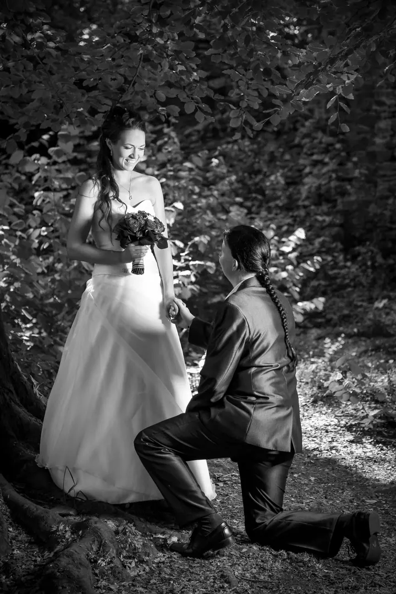
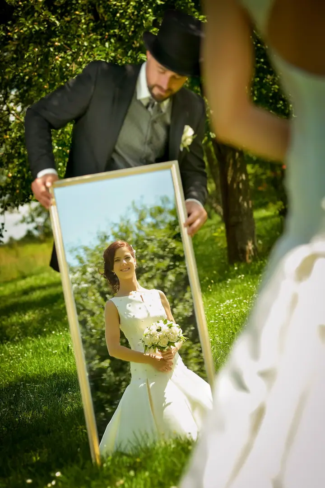
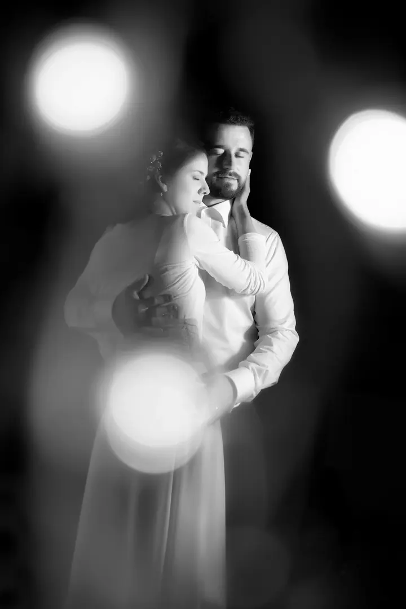
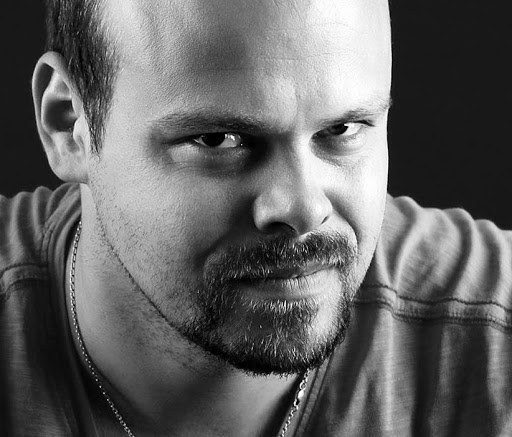

01 / 04
Svatební fotografie
Ke každé svatbě přistupuji individuálně a snažím se co nejvíc splnit přání novomanželů. Podle zvolené varianty fotím od obřadu až po večerní zábavu, na přání i předsvatební rande.
Zeptat se na termín→


Svatby, u kterých se budete smát
Zeptat se na termín →(01) Ahoj
Jmenuji se Radek Havlíček a fotografování se věnuji téměř dvě desetiletí, převážně v Táboře a okolí. Nejvíc mě najdete na svatbách , kde se snažím, aby pro vás i vaše hosty bylo focení zábavou . Za dobrou fotkou ale rád vyrazím do nejvzdálenějších koutů republiky a občas i do zahraničí .
(02) Co fotím
01 / 04
Ke každé svatbě přistupuji individuálně a snažím se co nejvíc splnit přání novomanželů. Podle zvolené varianty fotím od obřadu až po večerní zábavu, na přání i předsvatební rande.
Zeptat se na termín→Dále nabízím
Ve vlastním ateliéru pod Kotnovem, kousek od historického centra Tábora, vyfotím vás, vaši rodinu, děti i těhotenské bříško. Focení můžete někomu darovat i jako dárkový poukaz.
↗I zvíře je členem rodiny, a pejsci jsou moje velká vášeň. Fotím mazlíčky i pro útulky a dobročinné organizace.
↗Fotografuji produkty, reklamní snímky, firemní portréty a interiéry. Každá firma má své specifické požadavky, a těm se přizpůsobím.
↗(04) Postup
Od první zprávy po hotovou galerii.
Krok 1 z 4
Před svatbou se potkáme, probereme vaše přání, místo a rozsah focení a vyberete si variantu, která vám sedí.
Krok 2 z 4
Pokud chcete, vyrazíme spolu na předsvatební focení. Poznáme se a ve svatební den už budete před foťákem v klidu.
Krok 3 z 4
Fotím v domluveném rozsahu, od příprav a obřadu přes společné fotky až po první tanec, krájení dortu a večerní zábavu.
Krok 4 z 4
Do 3–4 týdnů dostanete upravené fotky v maximální tiskové kvalitě na USB a DVD, k tomu vyvolané fotografie 10×15 cm a na přání internetovou galerii pro sdílení s přáteli.
Pro dobrou fotku vlezu i do ledové vody.
(05) Za objektivem
Fotografování pro mě není jen práce, ale životní styl. Pro zajímavý snímek jsem ochoten podstoupit téměř cokoliv: lézt po příkrých střechách, ponořit se do ledové vody nebo se plazit po bahnité zemi.
Mám za sebou přes 350 svateb, a přesto ke každé přistupuji individuálně. Kromě svateb fotím portréty, rodiny a děti ve vlastním ateliéru pod Kotnovem, reklamní a produktové fotografie i reportáže ze společenských a sportovních akcí. Spolupracuji s několika dalšími fotografy, takže zvládneme i rozsáhlé akce a slavnosti.
Mojí velkou vášní jsou pejsci, a proto se jejich focení stalo nedílnou součástí mého života i práce.

Radek
Radek Havlíček · Svatební a portrétní fotograf
Varianta Basic do 2 hodin stojí 5 900 Kč, Advanced na 6 hodin 11 500 Kč, Full na 9 hodin 14 500 Kč a Exclusive na 12 hodin 17 900 Kč. Ceny platí od 11. 9. 2026 a nevztahují se na termíny rezervované dřív.
Zpracování trvá obvykle 3–4 týdny od focení. Všechny fotografie navíc rok archivuji.
Ano. Kromě Tábora fotím třeba v Českých Budějovicích, Jindřichově Hradci, Pelhřimově, Benešově, Vlašimi, Písku nebo Týně nad Vltavou. Dopravu počítám individuálně podle skutečných nákladů.
Ano, můj automatický fotokoutek funguje úplně bez obsluhy a hodí se na svatbu, firemní večírek i narozeninovou oslavu.
Rád vám připravím dárkový poukaz na focení v ateliéru pod Kotnovem.
(07) Kontakt
Napište pár vět o tom, co si představujete, a termín, který se vám hodí.